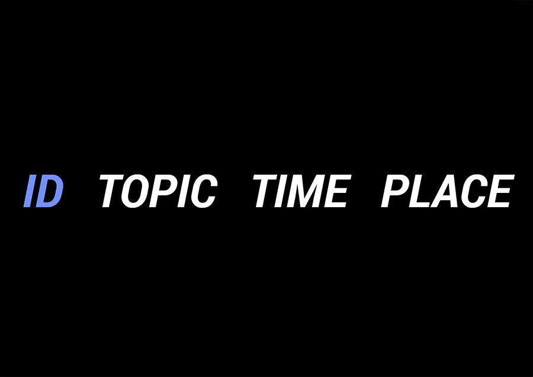
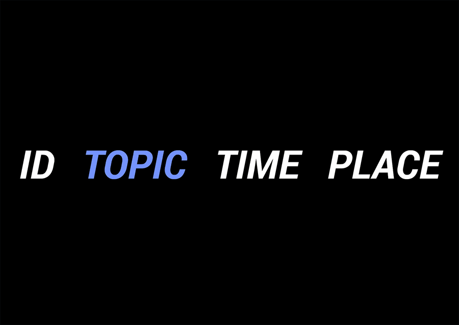
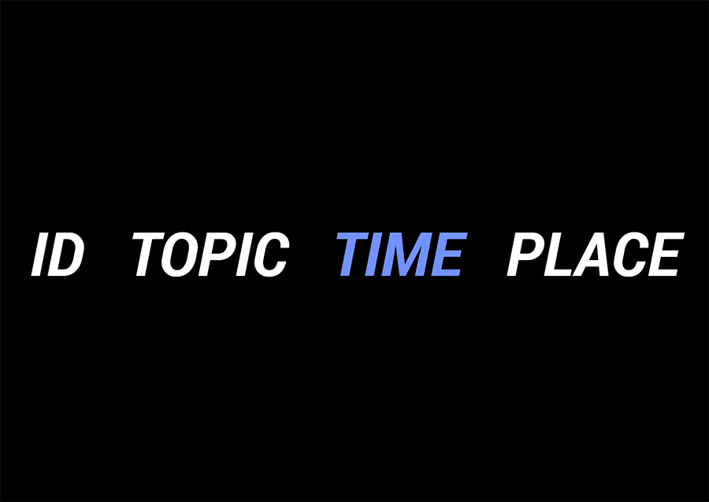
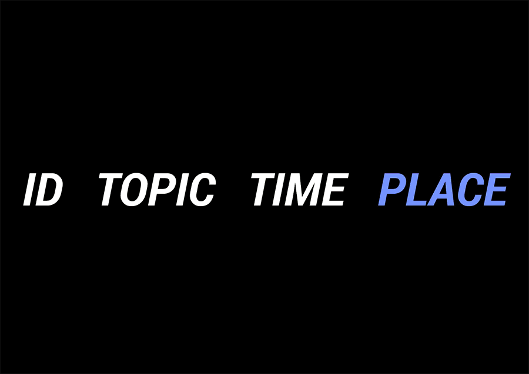
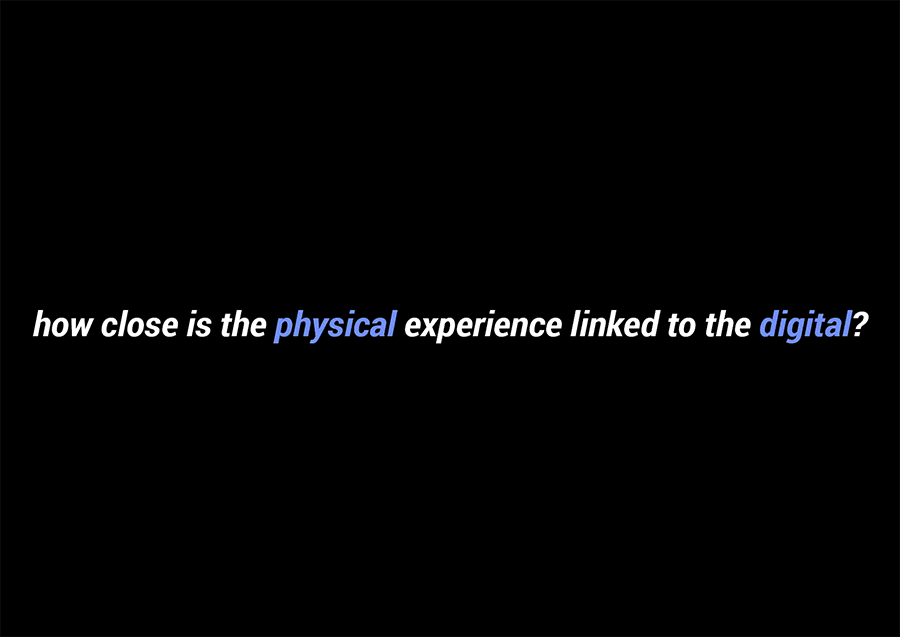
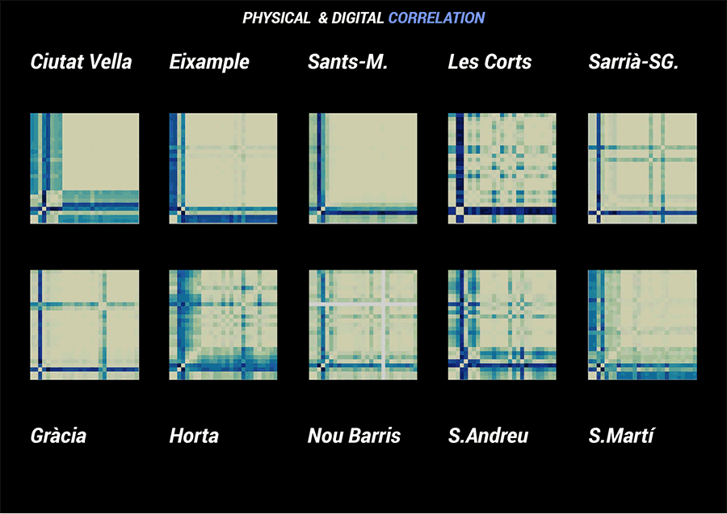
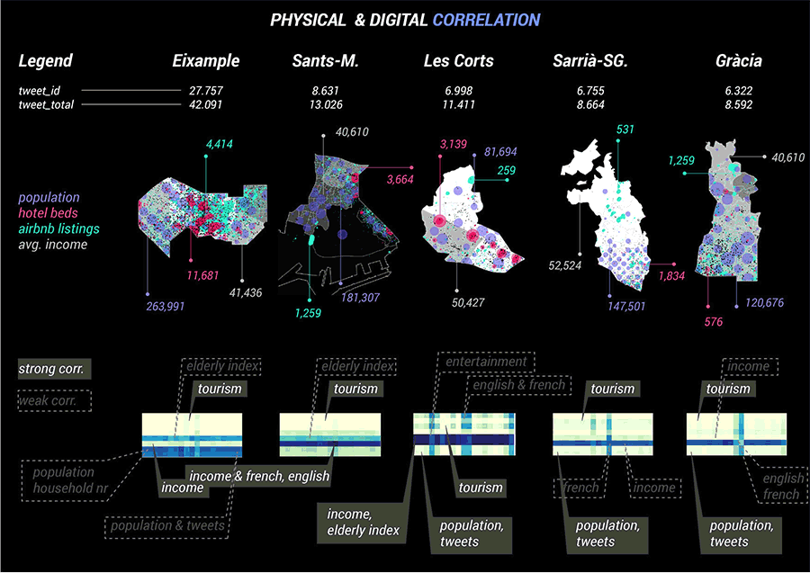

Social Media has become a significant part of the urban fabric. Through analysis and visualization it has tremendous potential to become a tool for city planning and future predictions. However there are a number of debates that think otherwise, and prove that these digital platforms might not be sufficient representation of the city.
This project seeks to find the relationship between the physical and digital aspects of the city of Barcelona. Twitter database (from November 2017-February 2018) represents the digital layer of the city for this project, while the physical includes population, income, airbnb, hotels, and tripadvisor data (local and tourists).
Click here for more information!







Correlation Of Barcelona is a project of IAAC, Institute for Advanced Architecture of Catalonia, developed at MaCT (Master in City & Technology),2017-18 by:
Students: Alba Alsina Maqueda and Venessa Williams
Faculty: Luis Falcon